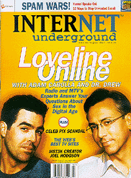

volume 2, issue 7
July/August 1997
electric paper
Cover Story:
Love (On)line
by Alex Gordon
This story is intended for adult audiences and may contain sexual content. On the net with Loveline's Adam Carolla and Dr. Drew.
Also Featuring:
Spam Vindicated!
by Rob Bernstein
Enter the Hormel factory in Austin, Minn., where 300,000 cans of the world's most famous lunch meat are produced daily, and find out what Hormel folks really think of all that spa..., we mean unsolicited bulk e-mail.
A Cure for the Rerun Blues
by Alex Gordon and Gloria Mitchell
Already saw this week's X-Files? Tired of Moesha repeats? Nothing on cable? Join us as we head to that other monitor--you know, the computer--and channel surf the Web sites of the TV and cable networks.
Assassination Politics
by Declan McCullagh
Cypherpunk Jim Bell wants to overthrow the government. He'll have to get out of jail first.
The Great Celeb Pix Scandal
by Sarah Ellerman
Could that busty body truly belong to Sandra Bullock? We explore the art of illusion in the controversial craft to photo fakery.
Zug
by Steve Knopper
Call it funny, call it hep, call it the Web's only comedy site. Call it what you like--just don't call it cool.
All the Little Ants
by Alex Gordon
Mystery Science Theater 3000 creator Joel Hodgson builds a virtual ant farm on the Web.
FAQ: Colin's Angels
by Todd Wright
Vigilantes or watchdogs? A closer look at the CyberAngels crusade with Colin Hatcher.
Plus:
Smuggling "Netscape Now," human crud online, and censorware gets flamed...again.
Run out to your local newsstand today!